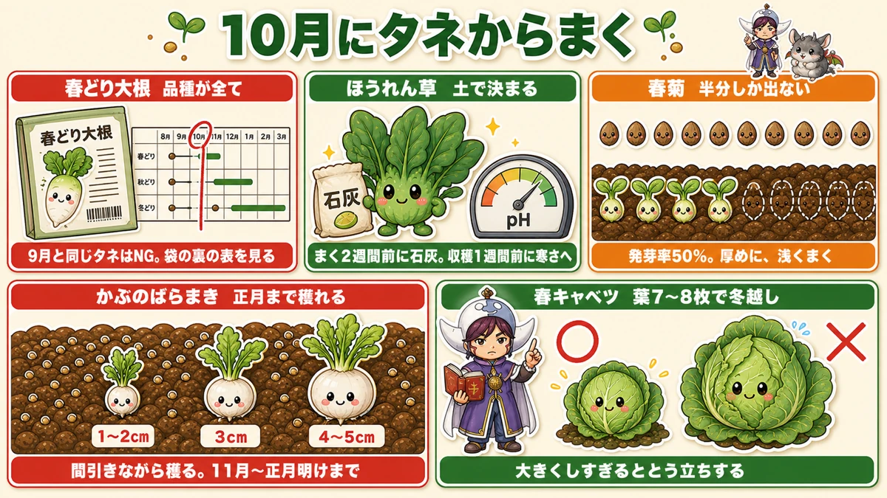
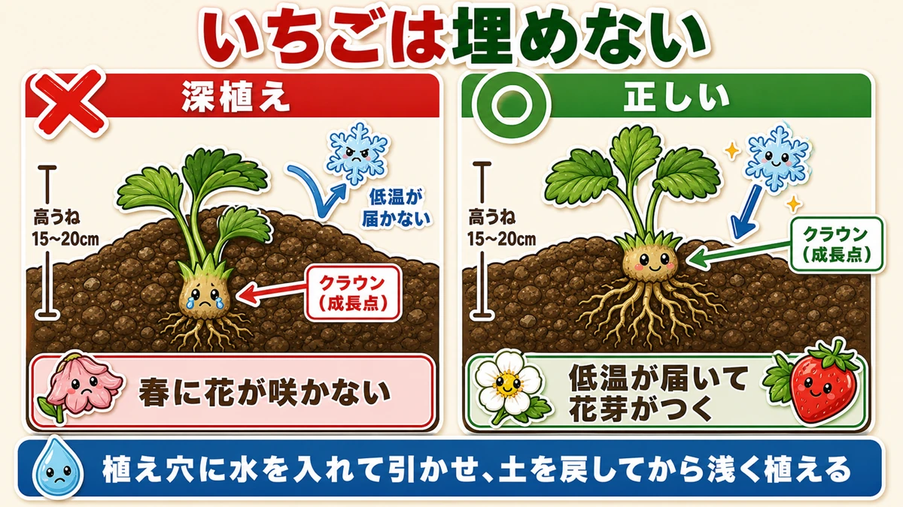
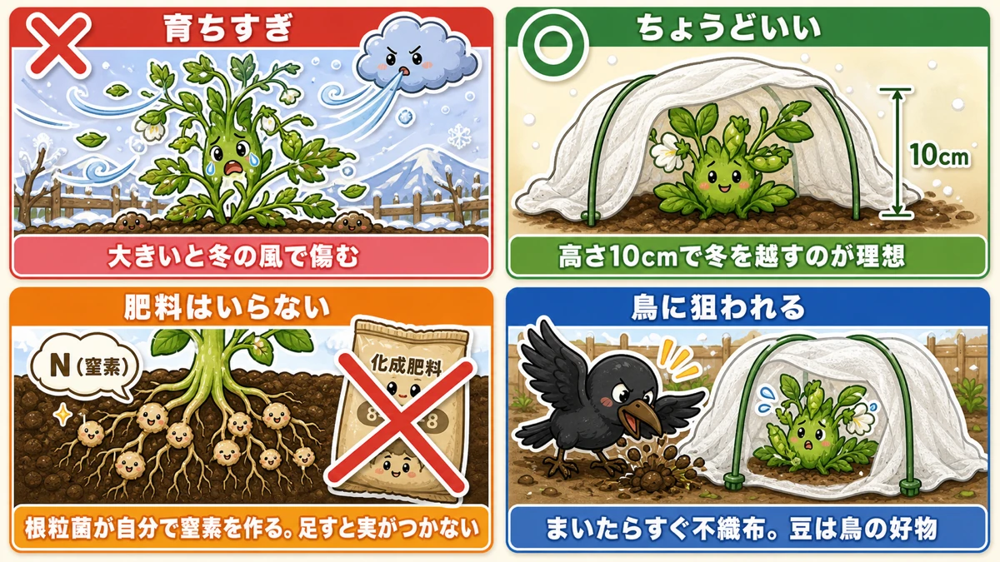
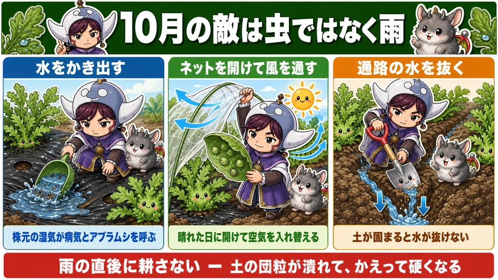
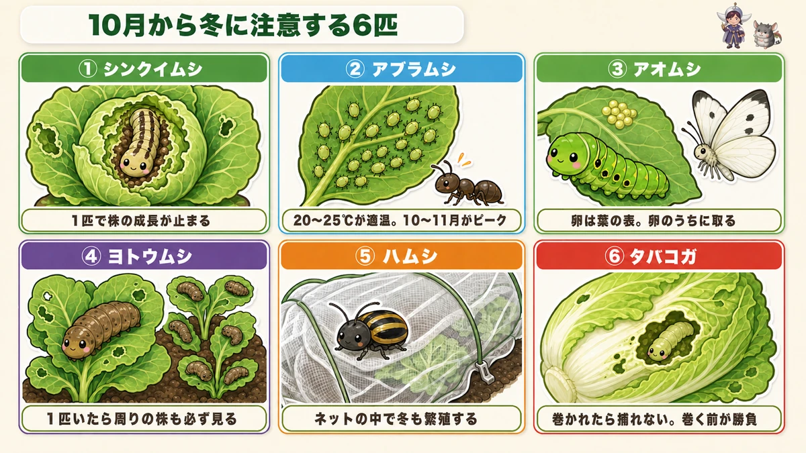

【10月にまく・植える野菜】いちごは「埋めない」が全てです🍓

🗨️「9月に出遅れた。もう今年は終わりかな…」
🗨️「いちごの苗、いつ植えるのが正解？」
🗨️「植えたのに、春に花が咲かなかった」
どうも、8150（えいこう）です🌱 家庭菜園歴8年、理科の教員免許を持っていて、有機・無農薬で野菜を育てています。
毎月お届けしている「今月なにをまく・植えるか」の定期便、10月号です。前回の9月号もあわせてどうぞ。
先に、この記事でいちばん言いたいことを言っておきますね。
10月にいちばん多い失敗は、いちごを「深く植えてしまう」ことです。
株元のふくらんだ部分を土で埋めてしまうと、春になっても花が咲きません。虫でも肥料でもなく、植えた日の指1本ぶんの高さで決まってしまう。それくらい、いちごは植え方が全てなんです。
そしてもうひとつ。10月は9月に出遅れた人にとって、いちばんの巻き返し月でもあります。9月がダメでも、10月にまける野菜はちゃんとあります。むしろ10月からのほうが、暑さがない分ラクなくらいです☺️
※以下の時期は中間地（関東〜関西の平野部）が目安。寒い地域は少し早め、暖かい地域は少し遅らせて。タネ袋の裏にまく時期が書いてあるので、そこも必ずチェック✨️
📖 この記事の目次
今月の畑は、こんな状態
10月から始める野菜には、9月までとはっきり違う特徴があります。
冬を越して、春に穫る。
昔はこれを「二年生（にねんそう）」と呼んだそうです。数え年で年を数えていた時代、お正月を越すと翌年になるので、年をまたいで育てる野菜を二年生と言った。今はあまり使われない言葉ですが、感覚としてはとてもよく分かる言い方だなと思います。
つまり10月にまくものは、年内に収穫するのではなく「小さいまま冬を越させて、春に一気に伸ばす」野菜です。ここが分かっていないと、育ちが悪いと勘違いして肥料を足してしまい、かえって失敗します。
10月にまくときの共通ルール
- 生育適温は15℃くらい。10月中旬を過ぎると、それを下回る日が出てきます
- なので、タネまきと不織布（白くて薄い布）のベタがけはセットにしてください。あとから足すのではなく、まいた日にかける
- もっと寒くなったら、穴あきビニールのトンネルに切り替える
「まだ大丈夫だろう」で不織布を省くと、発芽がそろわないまま寒くなります。10月のベタがけは防虫というより、保温のためだと思ってください。
10月にタネからまく野菜

春どり大根 ー 品種が全てです
10月にまく大根は、春に穫る大根です。ここでいちばん多い失敗は、9月に使ったのと同じタネをまいてしまうこと。
9月に植える青首大根は、春の暖かさに当たるとすぐとう立ち（花の茎が伸びて、根が硬くスカスカになること）します。10月まきには、年越し専用の品種を選んでください。
- タネ袋の裏に、まく時期のスケジュール表が必ず載っています。10月の欄に色がついているかを見る
- 「二年子大根」「三太郎」などは小ぶりだったり辛味が強いものが多いです
- 9月と同じような大きい青首が欲しいなら、冬穫り〜春穫り向けの品種を選ぶ
育て方は9月と同じで、肥料を入れず・水は控えめ。寒くなったらトンネルで保温すれば、うまくいけば年明けから穫れ始めます。
ひとつだけ注意。春の大根は収穫が遅れると一気に辛くなって硬くなります。春は成長が早いので、穫りどきを逃さないでください。
ほうれん草 ー 土で決まる野菜
ほうれん草は「うまくいく畑ではほったらかしでも育ち、合わない畑では何をしても育たない」という、はっきり二つに分かれる野菜です。
理由は土の酸性度。ほうれん草は酸っぱい土と、やせた土をとにかく嫌います。
- まく2週間前に石灰を入れる。日本の土は雨で酸性に傾きやすいので、ほうれん草だけは必ずやってください
- 芽が出たあとに葉が黄色くなって止まったら、酸性が原因の可能性が高いです。草木灰をまくと回復することがあります
そしてこれは、ぜひやってみてほしい裏ワザ。
収穫の1週間前に、トンネルを外して寒さに当ててください。
寒さに当たったほうれん草は、身を守るために葉に糖をためます。甘さが別物になります。せっかく冬に育てているのだから、これをやらないともったいないです。
春菊 ー 半分しか芽が出ない前提で
春菊は最初から発芽率が悪い野菜です。普通の野菜のタネが75〜80%発芽するのに対して、春菊は50%くらい。
なので「厚めにまく」が正解です。薄くまいて足りなくなるより、多めにまいて間引くほうがずっとうまくいきます。タネも安く、量もたっぷり入っています。
もうひとつ大事なのが深さ。春菊は好光性種子（こうこうせいしゅし）といって、発芽に光が必要なタネです。深くまくと光が届かず、そもそも芽が出ません。
- まき溝は浅く。土は薄くかける程度
- かけたらしっかり鎮圧（手のひらで押さえて、タネと土を密着させること）
- 乾くと発芽しないので、雨の前後を狙ってまくと成功率が上がります
- ほうれん草と同じく酸性に弱いので、石灰は必須
かぶ ー ばらまきで、正月まで穫り続ける
10月からのかぶは、大きく育てるのは難しくなります。でも、それを逆手に取った育て方があります。
マルチをせず、うね全体にタネをバラバラとまく。すじまきでも点まきでもなく、とにかく密にまきます。
そして、大きくなったものから順番に、間引くように収穫していく。
- 最初は直径1〜2cmの極小サイズを、間引きがてら食べる
- 株の間隔が空くにつれて、残った株が大きくなる
- 最後は4〜5cmまで太る
これで11月から正月明けまで、ずっと収穫が続きます。手間は収穫だけ。10月にまく野菜の中で、いちばんラクで、いちばん長く楽しめる育て方です。
サニーレタス ー 途中で引っ越しできます
サニーレタスやリーフレタスは寒さに強く、12月に入ってもまけます。
レタスの面白いところは、育っている途中で移植できること。本葉が出ていれば根がしっかり張っているので、抜いて別の場所に植え直しても枯れません。
密にまいて、混んできたら空いているところへ引っ越しさせる。これができる野菜は意外と少ないので、初めての方にもおすすめです。
正月菜 ー お雑煮に間に合います
正月菜（別名・餅菜）は小松菜の仲間で、色が淡くて葉が柔らかい野菜です。今からまけば、お正月のお雑煮にちょうど間に合います。
余談ですが、お雑煮に入れる葉っぱは地方色がとても豊かです。東京は小松菜、尾張は正月菜、関西は京菜や大和真菜、広島は広島菜、九州にはかつお菜という葉があります。
ご自分の出身地の葉を調べて育ててみるのも、この時期ならではの楽しみだと思います。育てながら「あと何日でお正月かな」と数えるのは、なかなかいいものですよ☺️
春キャベツ ー 葉7〜8枚で冬を越す
春キャベツは、巻きがゆるくて葉が柔らかい、冬キャベツとは完全に別物の野菜です。収穫は3〜5月。
ここには、はっきりした数字のルールがあります。
冬前に大きくしすぎると、とう立ちします。
だから10月まきの春キャベツは、大きくしようとしてはいけません。葉7〜8枚くらいで冬を迎えるのが理想です。追肥をどんどんやって立派にする必要は、この時期にかぎってはありません。
もし育ちすぎて葉が10枚を超えてしまっても、まだ手はあります。10℃以下になる日が合計30日を超えなければ、とう立ちのスイッチは入らないと言われています。トンネルで温めて、寒い日を減らしてあげてください。
この「10℃以下が30日」という数字、玉ねぎのとう立ちとまったく同じ理屈です。冬越しさせる野菜には共通のルールがあるんだな、と思っていただけたら😊
10月の主役、いちご🍓

いよいよ本題です。いちごの植え付けは、10月中に終わらせてください。
というのも、いちごは冬の間、地上部はほとんど変化しません。でも地面の下では、根がどんどん広がっています。植え付けが遅れると、この根づくりの時間が足りない。すると4月以降に花が咲かず、実が穫れません。
適期は10月中旬から11月上旬、ど真ん中は10月中旬です。
★クラウンを埋めない ー これだけは絶対
いちごの株元を見てください。葉の付け根に、ギザギザした短い茎のかたまりがあります。これをクラウン（王冠）と呼びます。
ここがいちごの成長点、つまり全ての葉と花が生まれてくる場所です。
そしてクラウンは、冬の5℃以下の低温に当たることで「春が来たら花を咲かせよう」というスイッチが入ります。これを花芽分化（かがぶんか）といいます。
つまり、クラウンを土に埋めてしまうと、低温が届かず、スイッチが入らず、春に花が咲きません。
私も一昨年これをやりました。12株植えて、4株が春になっても葉ばかりで花が咲かなかったんです。掘り返してみたら、その4株だけクラウンが土に隠れていました。あのときは本当にがっかりしました。
深植えを防ぐ、確実なやり方はこれです。
- 植え穴に先に水を入れて、引くのを待つ
- 水が引いたら、穴に土を少し戻して底を浅くする
- そこに苗を置くと、自然にクラウンが土の上に出る
苗の土の表面が、うねの表面より少し高くなるくらい。「浅すぎるかな」と感じるくらいでちょうどいいです。
うねは高く、マルチは貼る
いちごの根はヒゲ根といって、横に細かく広がるタイプです。この根がとてもデリケートで、水が多すぎても乾きすぎても傷みます。
- うねの高さは15〜20cm（普通のうねは10cmくらい）。水はけの悪い畑ほど高く
- マルチは貼ったほうがいいです。冬でも光は十分当たるので、花芽分化には影響しません
マルチを貼らないと、逆に苗が日差しで傷んだり、春に地温が上がらず実が遅れたりします。栽培期間が10月から春まで6か月以上と長いので、端は足でしっかり踏んで固定してください。
肥料と水は「やらない」が正解
これも大事なポイントです。
- 肥料を入れすぎると、花の数が減ります。無肥料の場所を選ぶのがいちばんいい
- どうしても入れるなら、植え付けの3週間以上前に済ませる
- 追肥は植え付けの半月〜1か月後、株元から15〜20cm離して、1株ひとつまみ程度
そして水。
- 植えた直後だけ、たっぷり
- そのあとは、ほとんど水やり不要です
毎日律儀に水をやると、根腐れしますし、根が「探しに行かなくていい」と判断して広く深く伸びなくなります。冬は雨も降るので、基本は放っておいて大丈夫です。
苗選びと株数
- クラウンが太くしっかりしている苗を選ぶ。ここが細い苗は、そのあとも伸びません
- 葉が枯れていないか、虫がついていないかもチェック
- 株間は30cm
- 株数は1人あたり3〜5株が目安。4人家族なら12株以上あると満足感が違います
ただ、いちごは翌年に株分けで増やせます。最初の年は数株から始めて、翌年に増やすというやり方も十分アリです。
株分けするときは、孫株以降を移植してください。子株までは親株の病気を受け継いでしまうけれど、孫株には影響しないとされているためです。
ランナーの向きと、防虫ネット
苗の株元に、切られた古い茎の跡があることがあります。これがランナーで、親株とつながっていた名残です。
新しい花やランナーは、この古いランナーの反対側に出やすい性質があります。なので古いランナーを通路と反対側（内側）に向けて植えると、実が手前に出てきて収穫がラクになります。
ただ、家庭菜園では必ずしもその通りにならないので、見つからなければ気にしなくて大丈夫です。
もうひとつ、意外に思われるかもしれませんが、いちごに防虫ネットは不要です。日光をしっかり当てたいですし、ネットがあるとアブラムシの点検がひと手間増えてしまいます。
冬越しはマルチをしていない場合、わらや乾かした雑草で株元を覆ってください。11月後半から12月ごろが目安。ビニールトンネルは不要です。むしろ寒さに当てないと実がつきませんから☺️
10月下旬、豆のタネまき

そら豆・スナップエンドウ ー 小さいほどいい
この2つは10月下旬から11月はじめにまきます。そして共通する、たったひとつの鉄則がこれです。
冬を越すときは、小さいほどいい。
大きく育った状態で真冬に入ると、冷たい風に当たって傷みます。春になれば一気に伸びるので、年内は伸ばさなくていいんです。
- スナップエンドウの理想は、冬に入る時点で高さ10cmくらい。20cmを超えると冬越しが厳しくなります
- 近年は暖かい年が多いので、例年より2〜3週間遅らせるくらいでちょうどいいことも
- 保険として、ポットにも同時にまいておくと安心です。だめだったら植え替えられます
マメ科は、肥料を入れてはいけません
これは理科の話とつながる、とても面白いところです。
マメ科の根には根粒菌（こんりゅうきん）という菌が住みついています。この菌は空気中の窒素を取り込んで、豆に栄養として渡してくれます。つまり豆は、自分専用の肥料工場を根に飼っているようなものなんです。
だから人が肥料を足すと、多すぎになります。すると葉やつるばかり茂って、実がつかなくなる。
- 前作の残った肥料で十分です
- とうもろこしの跡地やナスの跡地など、追肥をたくさんした場所は避けたほうが無難です
まき方で外せない3つ
- マルチの穴に4粒。穴の土は寄せて平らにする（へこんでいると水が溜まってタネが腐ります）
- 覆土したら、しっかり鎮圧。土が乾いていなければ水やりは不要
- 株間30〜40cm（つるありは45cm）
そして、これを忘れると全部無駄になります。
不織布のベタがけを必ずしてください。
豆は鳥の大好物です。まいた直後にカラスに掘り返されて全滅、というのは本当によくある話。本葉が開くころまでは、必ず不織布で守ってください。乾燥防止も兼ねられます。
本葉が2〜3枚になったら、生育のいい2本を残して間引きます。
そら豆と玉ねぎは、隣に植えると両方いい
コンパニオンプランツ（一緒に植えると育ちがよくなる組み合わせ）の中で、私がいちばん実感しているのがこれです。
- 植え付け時期も収穫時期もほぼ同じなので、うねの計画が立てやすい
- どちらも地下に根を張るので、株元が覆われて寒さのダメージを受けにくい
- 春にそら豆の根粒菌が土に窒素を残し、玉ねぎがそれを吸って玉が大きくなる
- 春にそら豆の先端につくアブラムシに、テントウムシやヒラタアブが集まってくる。その天敵が玉ねぎ側の虫も食べてくれる
いちごには、ニンニクや長ネギが合うと言われています。ネギ類のにおいをアブラムシやハダニが嫌うためです。株元から30cmほど離して植えてみてください。
ただし、コンパニオンプランツは諸説あって、必ず効くというものではありません。「効いたらラッキー」くらいの気持ちでどうぞ😊
10月最大の落とし穴は、虫ではなく雨です

これ、あまり語られないのですが、10月は雨が多い月です。ひどい年は1週間降り続きます。
そして10月は、いちご・ニンニク・玉ねぎ・そら豆と、植えるものがいちばん多い月でもあります。だから雨の影響を、いちばん受けやすい。
長雨が続くと、こういうことが起きます。
- 病気が出ます。土が湿り続けるとカビの菌が増え、白菜などが腐ってきます
- アブラムシが増えます。じめじめして風が通らない場所が、彼らにとっては天国です
- タネと根が腐ります。まいた直後のタネは水に浸かると腐り、植えて1か月の苗でも根腐れを起こします
雨のあとにやる3つのこと
- マルチの上に溜まった水を、かき出す
うねに少しへこみがあると、そこに水が溜まります。株元の湿度が上がって病気とアブラムシを呼ぶので、見つけたらかき出してください。溜まりやすい場所には、小さく穴を開けて通路へ逃がすのも手です。芽が出ている穴に水が入るのは問題ありません。
- 晴れ間に、防虫ネットを開けて風を通す
ネットの中は雨のあと、通気性が最悪になります。晴れた日に開けて空気を入れ替えてください。そのついでに、葉の裏と成長点付近をチェック。アブラムシは1匹入れば数日で増えます。ネットについた雨粒や、葉のしずくを払っておくのも効果があります。
- 通路の水が抜けるようにする
土が固まると雨水が抜けません。通路を少し深く掘るか、スコップを差し込んでおくだけでも変わります。
ただし、雨の直後に耕してはいけません
ここ、やってしまいがちです。
土がべちゃべちゃだからと、雨上がりすぐにうね間を耕す。これは逆効果です。
土の中には団粒（だんりゅう）という、細かい粒がくっついてできた小さなかたまりがあります。この粒と粒のすき間が、水と空気の通り道になっている。濡れた状態で耕すと、この構造が押し潰されて、かえって硬い土になります。
耕すのは、土が多少乾いてからが正解です。
10月から冬に注意する虫、この6匹

「涼しくなったから虫は終わり」と思っていると、痛い目にあいます。むしろ産卵時期の終わりが近い虫ほど、冬前に子孫を残そうとして必死に卵を産みます。
①シンクイムシ ー 1匹で株が止まる
ガの幼虫で、株の真ん中の成長点に潜り込みます。1株に1匹いるだけで成長が止まり、ひどいと枯れます。縦じま模様なので、見つけさえすれば分かりやすい虫です。葉をめくって芯を覗く癖をつけてください。
②アブラムシ ー 10〜11月がピークです
これは意外に思われるかもしれません。アブラムシが繁殖する適温は20〜25℃。つまり真夏より、涼しくなった10〜11月のほうが増えるんです。
1週間で数百倍から数千倍になります。しかもウイルス病を運んでくるので、被害が二重になります。
見つけるコツをひとつ。アリがいたら、ほぼ間違いなくアブラムシがいます。アリはアブラムシの排泄物を食べに来ているだけで、野菜そのものには害を与えません。アリの行列は、アブラムシへの案内板だと思ってください。
③アオムシ ー 卵のうちに取る
モンシロチョウの幼虫です。最近は暖かいので、関東では冬の間もずっと白い蝶が飛んでいます。白い蝶を見かけたら、ほぼ確実に卵を産んでいると思っていいです。
コツは、卵の段階で取ること。モンシロチョウの卵は葉の表面に産まれます。薄い黄色の小さなつぶつぶを見つけたら、それが卵。ここで拭き取れば、幼虫を探す手間が丸ごとなくなります。
④ヨトウムシ ー 1匹いたら周りも見る
葉を食べ尽くして、ひどいと葉脈だけにしてしまいます。この虫の特徴は、一度に大量に発生すること。1つの株で見つけたら、その周りの株にもまず間違いなくいます。1株だけ見て安心しないでください。
⑤ハムシ ー ネットの中で冬を越します
キスジノミハムシやダイコンハムシのことです。この虫のやっかいなところは、防虫ネットの中で冬の間も繁殖し続けること。
土の中と葉の上を行き来しているので、見つけて確実に潰していくと、翌年の数がはっきり減ります。小さくて素早いので、筆にのりをつけてペタペタ取る方法もあります。
⑥タバコガ ー 巻かれる前に
芯に潜っていく虫です。レタス・白菜・キャベツのように巻く野菜では、結球の中に入られたらもう捕まえられません。中身を全部食べられます。
だから、巻き始める前が勝負です。葉についた卵や小さな幼虫のうちに取り除いてください。
白菜を育てている方へ
10月は白菜の下葉処理の時期でもあります。ここに大事な注意点があります。
枯れた下葉を残すと、腐って匂いで害虫を呼び、風通しが悪くなって病気が出ます。だから取る。
でも、取りすぎてはいけません。
白菜が巻くのは、外葉が光合成して栄養を送り込むからです。外葉を取ると巻かなくなります。取っていいのは、完全に枯れた葉だけ。少しでも青みが残っていれば残してください。
あわせて、マルチの上に乗った泥を払っておくと湿度が下がります。追肥は苗を植えてから約1か月後、外葉が横に広がり出したタイミングで。土寄せもセットでやると、肥料の効きがよくなって溝もでき、水はけが改善します。
葉が防虫ネットに当たって窮屈そうなら、緩めてあげてください。当たったままだと風通しが悪くなって病気が出ます。
学ぶ：なぜ、寒さに当てないと実がならないのか🔬
理科の時間です。今回はいちごのクラウンの話を、もう一歩だけ深めます。
いちごは、秋に植えてもすぐには花を咲かせません。冬をはさんで、春に咲きます。なぜわざわざ待つのでしょうか。
答えは、いちごにとって「今が春かどうか」を判断する必要があるからです。
秋の気温と春の気温は、実はよく似ています。10月の20℃と、4月の20℃。温度だけでは見分けがつきません。もしいちごが「暖かくなった、花を咲かせよう」と秋に判断してしまったら、咲いた花はそのまま冬の寒さで枯れてしまいます。
そこでいちごが使っているのが、寒さの記憶です。
一定期間、5℃以下の低温にさらされる。それを経験してはじめて、「冬が終わった」と判断できるようになる。だから寒さを通り過ぎた後の暖かさだけが、本物の春として認識されます。
このしくみが花芽分化です。そしてそのセンサーがある場所が、クラウンなんです。
だから、クラウンを土に埋めてはいけない。土の中は地上より温度が安定していて、冷え込みが伝わりにくいからです。センサーに冬が届かないと、いちごはいつまでも「まだ春じゃない」と判断し続けます。
同じ理屈で、ビニールトンネルも不要です。よかれと思って温めると、寒さの記憶が積み上がらず、かえって花が減ります。
玉ねぎや春キャベツの「10℃以下が30日でとう立ちのスイッチが入る」というのも、同じ寒さの数え方です。植物は温度計とカレンダーを両方持っている。そう考えると、冬の畑が少し面白く見えてきませんか😊
お子さんと一緒なら、12株のうち2株だけわざと深植えして、春に比べてみてください。花が咲く株と咲かない株がはっきり分かれます。ちょっと残酷ですが、これ以上ない実験になります🍓
まとめ
ここまで読んでくださって、ありがとうございます！
10月は、9月に出遅れた人が巻き返せる月です。ポイントを整理しておきますね。
- いちごはクラウンを埋めない。植え穴に土を戻して、浅く植える。高うね15〜20cm、肥料と水はやらない
- 10月にまくのは冬を越して春に穫る野菜。小さいまま冬に入れるのが正解。春キャベツは葉7〜8枚、スナップエンドウは高さ10cm
- 春どり大根は品種が全て。タネ袋の裏のスケジュール表を必ず見る
- マメ科（そら豆・スナップエンドウ）に肥料は入れない。根粒菌が自前で窒素を作っている
- 10月の敵は雨。溜まった水をかき出し、晴れ間にネットを開けて風を通す。雨の直後に耕さない
- 虫は減らない。アブラムシは10〜11月がピーク。アリがいたらアブラムシがいる
全部やろうとしなくて大丈夫です。まずはいちごを3株だけ、クラウンを出して植えてみてください。それだけで来年の春が、ぜんぜん違うものになります🌱
次回は、10月に植える球根野菜の代表「にんにく」。植えっぱなしにせず大玉にする話をします🧄
いちご苗（越後姫）
10月中に植えるのがいちごの絶対条件です。記事のとおり、クラウンを埋めないように浅く植えてください。3株あれば、来年の春に子どもが喜ぶくらいは穫れます。
![[商品価格に関しましては、リンクが作成された時点と現時点で情報が変更されている場合がございます。]](https://hbb.afl.rakuten.co.jp/hgb/56d219d2.53a040c0.56d219d3.af4d1b3a/?me_id=1335885&item_id=10000039&pc=https%3A%2F%2Fthumbnail.image.rakuten.co.jp%2F%400_mall%2F15no87%2Fcabinet%2F08573597%2F08577457%2F1bn698.jpg%3F_ex%3D240x240&s=240x240&t=picttext "[商品価格に関しましては、リンクが作成された時点と現時点で情報が変更されている場合がございます。]")

不織布
10月にまくものは、まいた日にこれをかけます。防虫というより保温のためです。生育適温15℃を下回る日が出てきたら、あるとないとで発芽が変わります。
![[商品価格に関しましては、リンクが作成された時点と現時点で情報が変更されている場合がございます。]](https://hbb.afl.rakuten.co.jp/hgb/56bc237a.e97551b1.56bc237b.2513ed10/?me_id=1310260&item_id=10000879&pc=https%3A%2F%2Fthumbnail.image.rakuten.co.jp%2F%400_mall%2Fdiokasei%2Fcabinet%2F007fusyokufu%2F12g%2Fimgrc0092049705.jpg%3F_ex%3D240x240&s=240x240&t=picttext "[商品価格に関しましては、リンクが作成された時点と現時点で情報が変更されている場合がございます。]")
穴あき黒マルチ
いちごは10月から春まで6か月以上そのままなので、マルチがあると草取りの手間がまったく違います。株間30cmで使ってください。
![[商品価格に関しましては、リンクが作成された時点と現時点で情報が変更されている場合がございます。]](https://hbb.afl.rakuten.co.jp/hgb/55521906.a3595d78.55521907.92994d18/?me_id=1225177&item_id=10035007&pc=https%3A%2F%2Fthumbnail.image.rakuten.co.jp%2F%400_mall%2Fssn%2Fcabinet%2F02584092%2F07223762%2F4980356008386_1.jpg%3F_ex%3D240x240&s=240x240&t=picttext "[商品価格に関しましては、リンクが作成された時点と現時点で情報が変更されている場合がございます。]")
スナップエンドウのタネ（つるなしホルンスナック）
つるなしなので、やぐらを組まずに支柱4本で済みます。子どもと一緒に穫るなら断然こちらです。10月下旬まきで、年末に10〜15cmを目指してください。
![[商品価格に関しましては、リンクが作成された時点と現時点で情報が変更されている場合がございます。]](https://hbb.afl.rakuten.co.jp/hgb/552615f0.9cc2855e.552615f1.776f7de9/?me_id=1251188&item_id=10000610&pc=https%3A%2F%2Fthumbnail.image.rakuten.co.jp%2F%400_mall%2Fyonezawa%2Fcabinet%2Ftane01%2F10mame%2Fhorunsnack.jpg%3F_ex%3D240x240&s=240x240&t=picttext "[商品価格に関しましては、リンクが作成された時点と現時点で情報が変更されている場合がございます。]")
そら豆のタネ（駒栄）
秋まき用の品種です。10月下旬から11月はじめにまいて、小さいまま冬を越させます。玉ねぎの隣に植えると、お互いによく育ちます。
![[商品価格に関しましては、リンクが作成された時点と現時点で情報が変更されている場合がございます。]](https://hbb.afl.rakuten.co.jp/hgb/56d217e1.4eab06f8.56d217e2.1513a8ec/?me_id=1204270&item_id=10005616&pc=https%3A%2F%2Fthumbnail.image.rakuten.co.jp%2F%400_mall%2Fnikkoseed%2Fcabinet%2Fseeds%2Fssk%2Fsskv1088h4701.jpg%3F_ex%3D240x240&s=240x240&t=picttext "[商品価格に関しましては、リンクが作成された時点と現時点で情報が変更されている場合がございます。]")
カキ殻石灰
ほうれん草と春菊は酸性の土だと育ちません。カキ殻の石灰はゆっくり効くので、まく直前に入れても大丈夫。熱も出ないので扱いやすいです。
![[商品価格に関しましては、リンクが作成された時点と現時点で情報が変更されている場合がございます。]](https://hbb.afl.rakuten.co.jp/hgb/56d21b6a.c19127f6.56d21b6b.c5473e84/?me_id=1258048&item_id=10000067&pc=https%3A%2F%2Fthumbnail.image.rakuten.co.jp%2F%400_mall%2Fkaneashop%2Fcabinet%2F12084383%2F12419790%2Fimgrc0108924525.jpg%3F_ex%3D240x240&s=240x240&t=picttext "[商品価格に関しましては、リンクが作成された時点と現時点で情報が変更されている場合がございます。]")